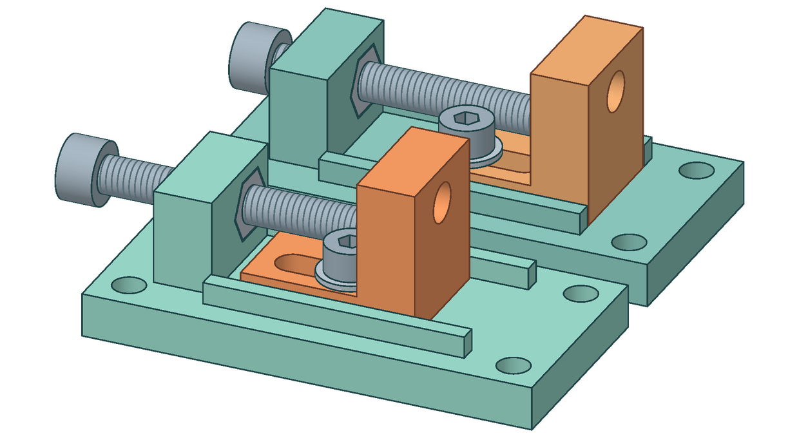

← К сборке ортезаСтенд тросового
ПРОТОТИП / V03
Стенд тросового
привода
Как движение барабана сгибает коленный шарнир и как выставить свободный ход двух тросов перед испытанием.
СБОРОЧНЫЙ ВИДV03 / C01 + C02

01 / КИНЕМАТИКА
Две ветви, один шарнир
Выберите угол или запустите цикл. Пока одна ветвь наматывается, вторая отдаёт такую же длину троса.
СХЕМА ПЕРЕДАЧИВид сбоку · условно
СгибаниеРазгибание
0°60°120°
Ход ветви32,99 мм
Обороты барабана0,438
Расчёт по радиусам 31,5 и 12 мм. Трос Ø2 мм лежит в один слой. Проскальзывание, растяжение и трение в схему не входят.
02 / ЧЕРТЕЖИ И ПЕЧАТЬ
Посмотреть и изготовить
В окне открывается тот же STL, который получает слайсер. Для изменений размеров есть STEP и параметрические исходники.
Загрузка STL…
Комплект стенда V03
STL в миллиметрах, STEP, исходники и инструкция. Основания и ползуны уже ориентированы для печати.
03 / РУЧНАЯ ПРОВЕРКА
Первый прогон на столе
Начните с отсоединённым двигателем. Закрепите одну пару C01/C02 на плите, поставьте винты M5 и M4 по инструкции и подготовьте короткую оболочку, трос и штангенциркуль.
Проверьте посадку
Оболочка Ø5 мм должна упираться в уступ ползуна. Протяните трос рукой и убедитесь, что он свободно проходит через канал.
Установите исходную точку
Ослабьте фиксатор M4 при снятой тяге. Подведите плоский конец M5 к ползуну. Замерьте положение ползуна от края основания.
Сравните ход и возврат
Один оборот M5×0,8 даёт 0,8 мм перемещения. Рабочий диапазон 8 мм. При обратном ходе подведите ползун рукой, затяните M4 и повторите для второй ветви.
Какой двигатель проверяем для стенда
Pololu 25D LP, № 4887. У мотор-редуктора есть энкодер и D-вал Ø4 мм, выступающий на 12,5 мм. В B03 отверстие Ø8,2 мм. Барабан B04 крепится к алюминиевой ступице № 1997 четырьмя винтами M3. Его наружный диаметр 34 мм, на 3 мм больше B03. Предстоит проверить зазор до кожуха и опору вала при боковой тяге.
По паспорту в точке максимального КПД при 12 В момент на выходе составляет 0,137 Н·м при 47 об/мин. Показатели относятся к одной рабочей точке мотора.
Паспорт Pololu № 4887 ↗ · Чертёж ступицы ↗ПРОВЕРКА ПРИМЕРА V02
1,17 Н·мСтолько требуется от моторного барабана, чтобы получить 2 Н·м на колене при принятом КПД 65%. Это выше даже экстраполированного момента остановки двигателя, 0,85 Н·м. Для такой нагрузки двигатель не подходит.
Статус модели. Детали предназначены для ручной примерки на столе. Монтаж на голени, заделки тросов, торможение при отключении питания и прочность под тягой требуют отдельных испытаний. Прогоны на человеке не предусмотрены.